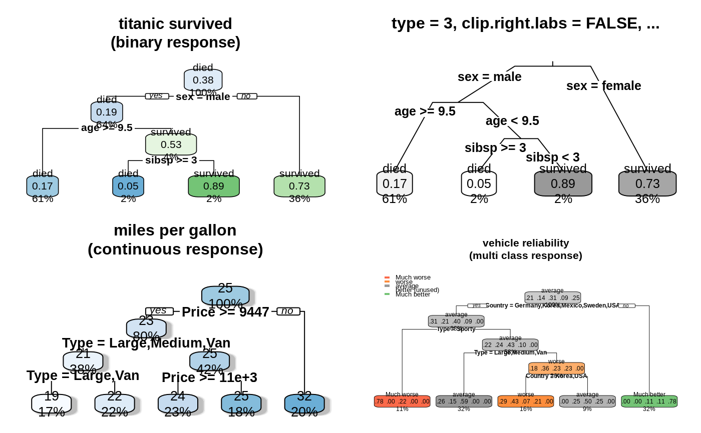

rpart.plot.RdPlot an rpart model, automatically tailoring the plot
for the model's response type.
For an overview, please see the package vignette Plotting rpart trees with the rpart.plot package.
This function is a simplified front-end to prp,
with only the most useful arguments of that function, and
with different defaults for some of the arguments.
The different defaults for the extra and col.palette
arguments mean that this function automatically creates a colored plot
suitable for the type of model (whereas prp by default
creates a minimal plot). In detail the different defaults are:
| | | rpart.plot | | | prp | | | |
type | | | 2 | | | 0 | | |
extra | | | "auto" | | | 0 | | |
fallen.leaves | | | TRUE | | | FALSE | | |
varlen | | | 0 | | | -8 | | |
faclen | | | 0 | | | 3 | | |
box.palette | | | "auto" | | | 0 | | |
The function rpart.plot.version1 is compatible with
old versions of this function and has the same defaults as prp.
rpart.plot(x = stop("no 'x' arg"), type = 2, extra = "auto", under = FALSE, fallen.leaves = TRUE, digits = 2, varlen = 0, faclen = 0, roundint = TRUE, cex = NULL, tweak = 1, clip.facs = FALSE, clip.right.labs = TRUE, snip = FALSE, box.palette = "auto", shadow.col = 0, ...)
| x | An |
|---|---|
| type | Type of plot. Possible values: 0 Draw a split label at each split and a node label at each leaf. 1 Label all nodes, not just leaves.
Similar to 2 Default.
Like 3 Draw separate split labels for the left and right directions. 4 Like 5 New in version 2.2.0.
Show the split variable name in the interior nodes. |
| extra | Display extra information at the nodes. Possible values: "auto" (case insensitive) Default. 0 No extra information. 1 Display the number of observations that fall in the node
(per class for 2 Class models: display the classification rate at the node,
expressed as the number of correct classifications and the number
of observations in the node. 3 Class models: misclassification rate at the node, expressed as the number of incorrect classifications and the number of observations in the node. 4 Class models: probability per class of observations in the node (conditioned on the node, sum across a node is 1). 5 Class models:
like 6 Class models: the probability of the second class only. Useful for binary responses. 7 Class models:
like 8 Class models: the probability of the fitted class. 9 Class models: The probability relative to all observations -- the sum of these probabilities across all leaves is 1. This is in contrast to the options above, which give the probability relative to observations falling in the node -- the sum of the probabilities across the node is 1. 10 New in version 2.2.0.
Class models:
Like 11 New in version 2.2.0.
Class models:
Like +100 Add Note: Unlike |
| under | Applies only if |
| fallen.leaves | Default |
| digits | The number of significant digits in displayed numbers.
Default |
| varlen | Length of variable names in text at the splits
(and, for class responses, the class in the node label).
Default 0 use full names (default). greater than 0 call less than 0 truncate variable names to the shortest length where they are still unique,
but never truncate to shorter than |
| faclen | Length of factor level names in splits.
Default |
| roundint | New in version 3.0.0.
If |
| cex | Default |
| tweak | Adjust the (possibly automatically calculated) |
| clip.facs | New in version 3.0.0.
Default |
| clip.right.labs | Applies only if |
| snip | Default |
| box.palette | Palette for coloring the node boxes based on the fitted value.
This is a vector of The special value The special value Otherwise specify a predefined palette
e.g. Prefix the palette name with |
| shadow.col | Color of the shadow under the boxes.
Default |
| ... | Extra arguments passed to |
The returned value is identical to that of prp.
The package vignette Plotting rpart trees with the rpart.plot package
prp
rpart.plot.version1
rpart.rules
Functions in the rpart package:
plot.rpart
text.rpart
rpart
old.par <- par(mfrow=c(2,2)) # put 4 figures on one page data(ptitanic) #--------------------------------------------------------------------------- binary.model <- rpart(survived ~ ., data = ptitanic, cp = .02) # cp = .02 for small demo tree rpart.plot(binary.model, main = "titanic survived\n(binary response)") rpart.plot(binary.model, type = 3, clip.right.labs = FALSE, branch = .4, box.palette = "Grays", # override default GnBu palette main = "type = 3, clip.right.labs = FALSE, ...\n") #--------------------------------------------------------------------------- anova.model <- rpart(Mileage ~ ., data = cu.summary) rpart.plot(anova.model, shadow.col = "gray", # add shadows just for kicks main = "miles per gallon\n(continuous response)\n") #--------------------------------------------------------------------------- multi.class.model <- rpart(Reliability ~ ., data = cu.summary) rpart.plot(multi.class.model, main = "vehicle reliability\n(multi class response)")par(old.par)